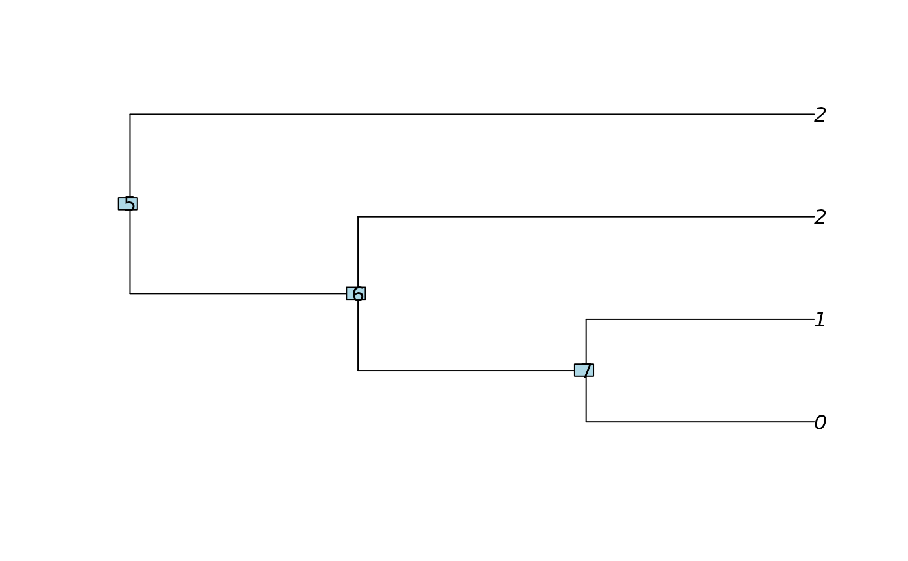

parsimonyNumber aims at finding the number of equivalent allocations of
the shifts on the tree, i.e allocations that are parsimonious and compatible
with a given clustering of the tips.
parsimonyNumber(phylo, clusters = rep(1, length(phylo$tip.label)))
| phylo | phylogenetic tree, class |
|---|---|
| clusters | the vector of the clusters of the tips. Default to all the tips in one single cluster. |
an object of S3 class "parsimonyNumber" with:
a (ntaxa + Nnode) x (nclus) matrix of locally parsimonious solutions starting from a cluster k at a given node
an object of class "parsimonyCost",
result of function parsimonyCost.
This function does a recursion up the tree.
The function extract.parsimonyNumber gives the result sought for
any subtree.
The matrix of costs of the states (number of shifts) is also required, it is
computed by function parsimonyCost.
#> #> Number of parsimonious solutions: 3. #>#> [1] 3#> [1] 2#> [1] 2## Extract for the sub-tree below node 7 extract(n_sols, 7) # Result: 2 (the ancestral state is either "0" or "1").#> [1] 2